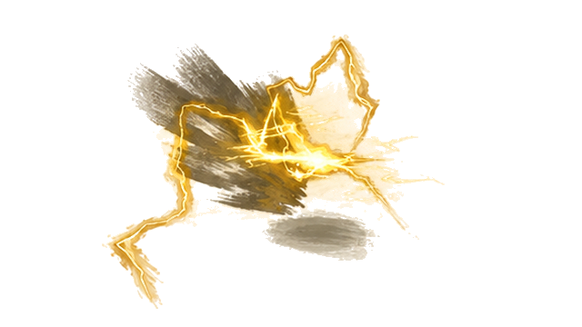
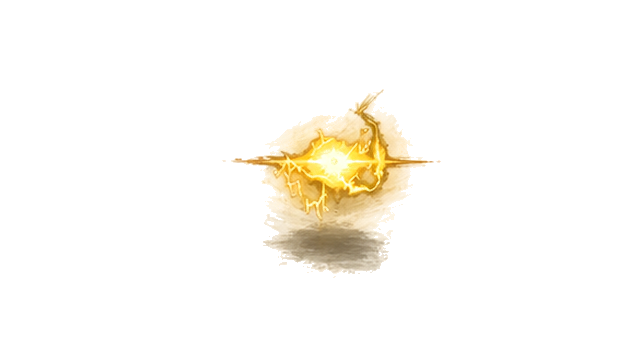
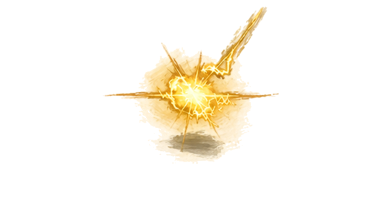
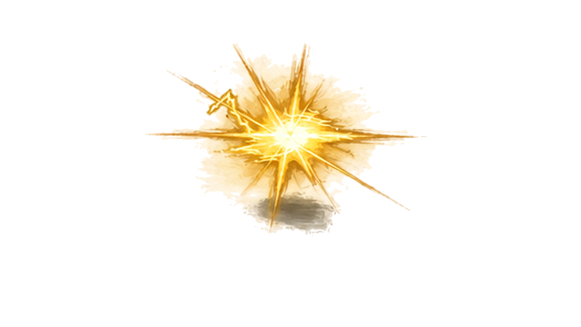
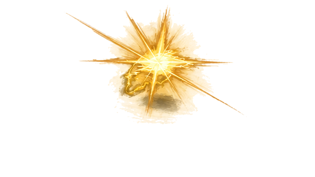
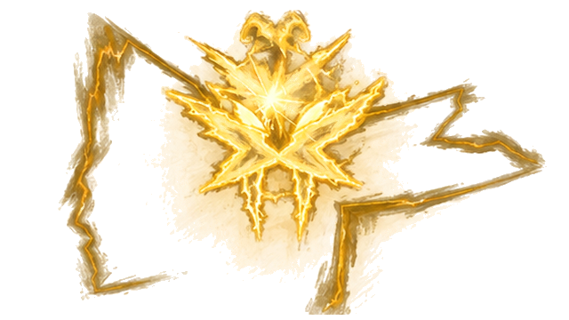

K9 · 原41 · Alpha层级 194

K9 · 原41 · Alpha层级 194

K10 · 原50 · Alpha层级 190

K11 · 原62 · Alpha层级 189

K12 · 原69 · Alpha层级 194

K13 · 原73 · Alpha层级 189

K14 · 原75 · Alpha层级 193

K15 · 原77 · Alpha层级 193

K16 · 原82 · Alpha层级 214